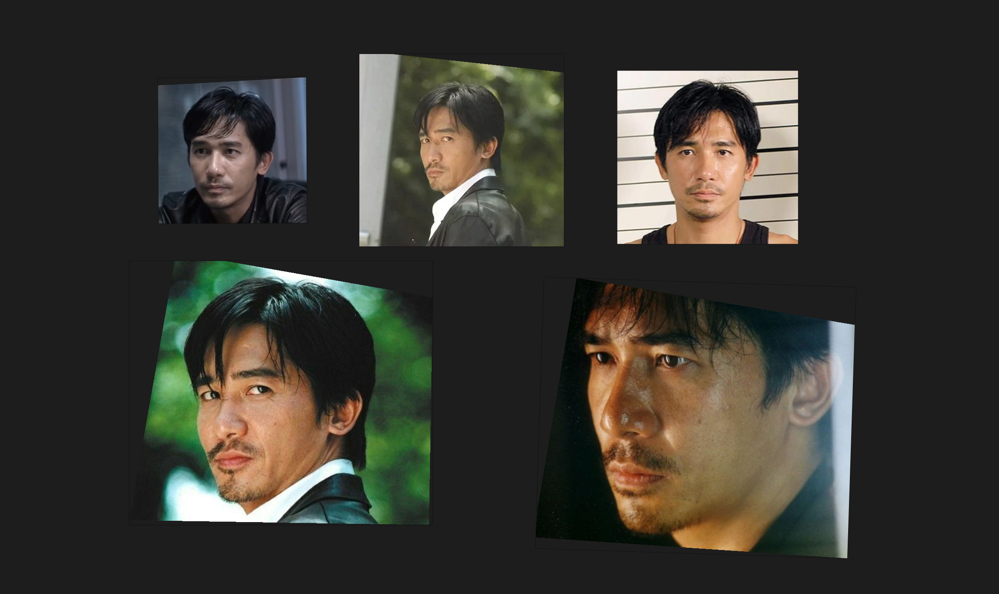
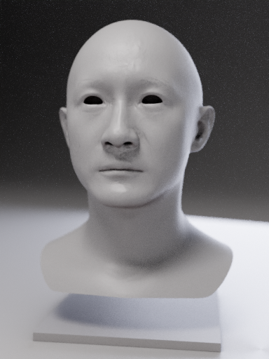
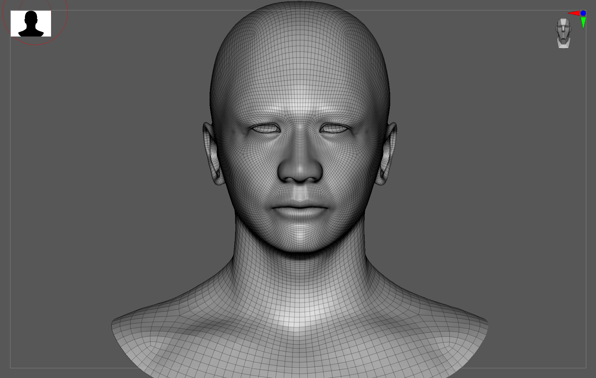
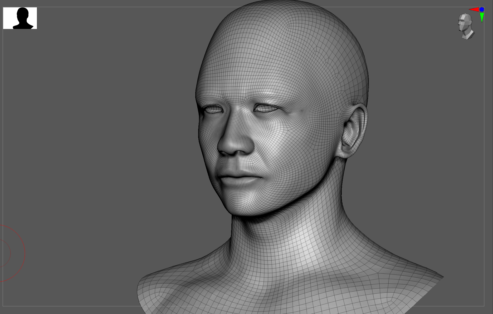
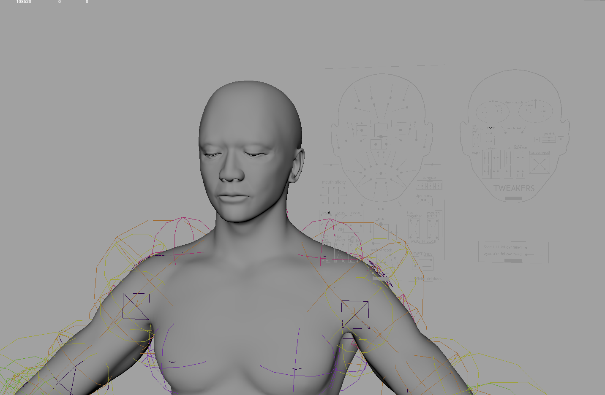
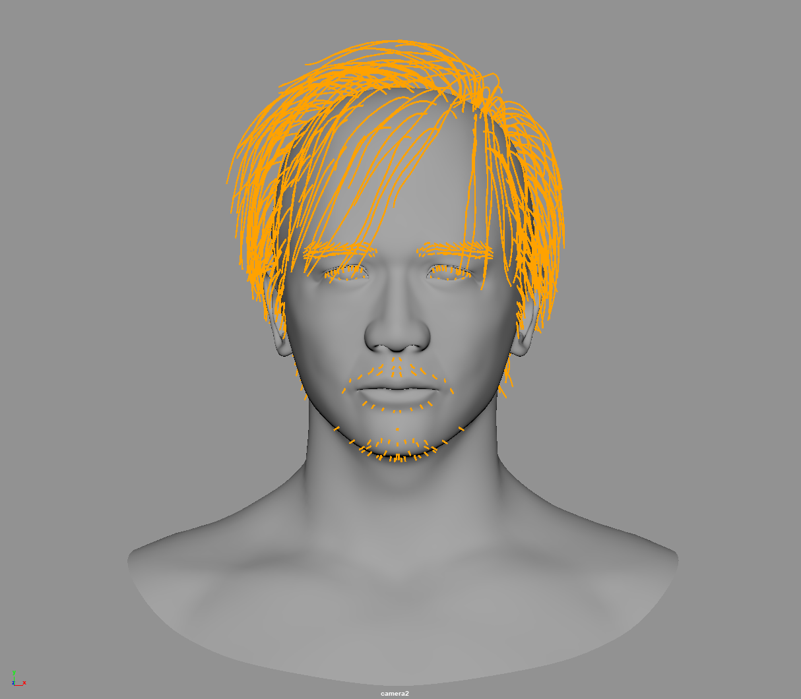
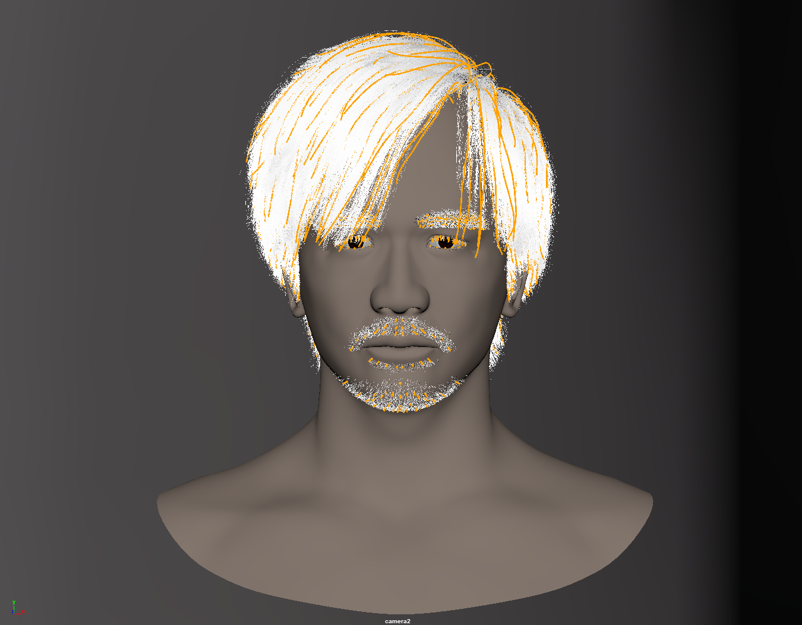
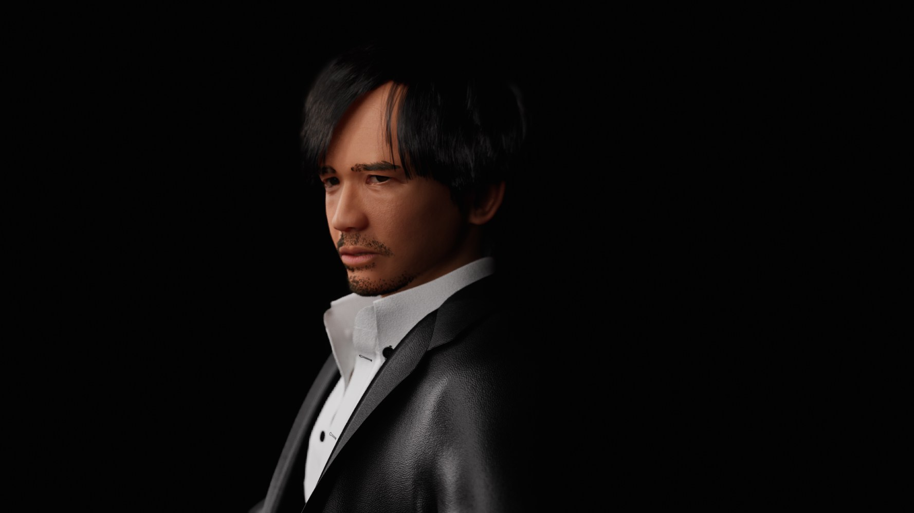
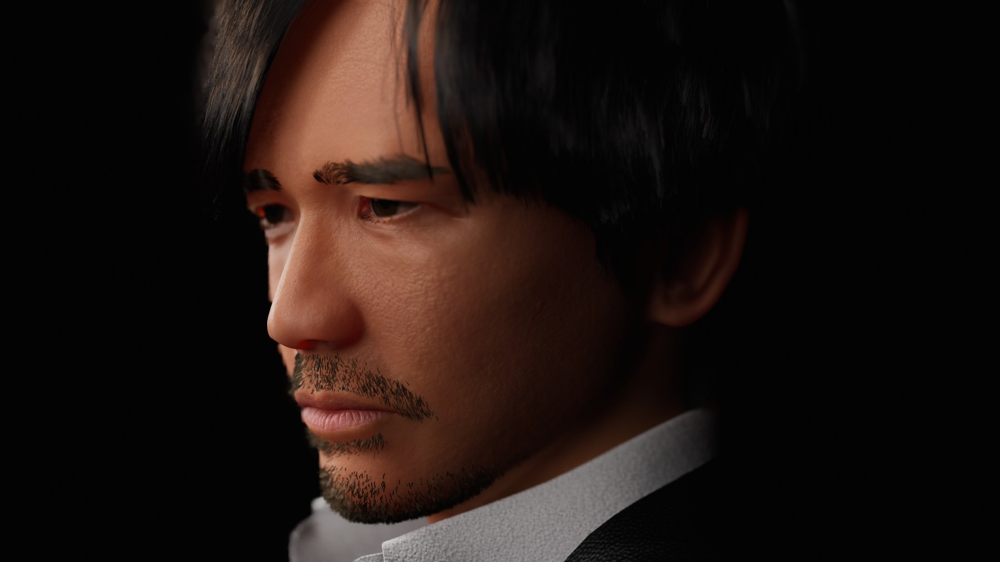
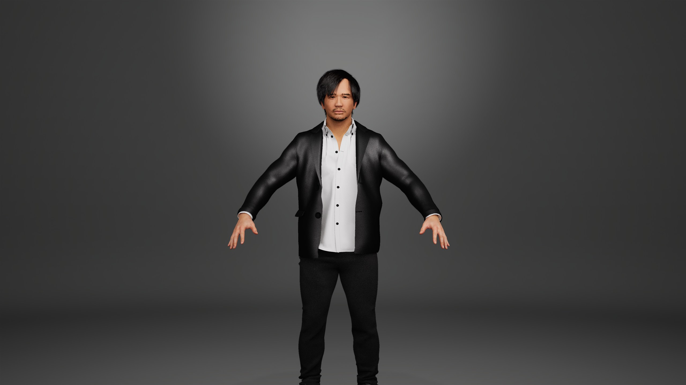

Overview
Building a production-quality digital human from scratch is slow, and most of the time goes into modelling, rigging and skinning before a character can be tested at all. This pipeline explores how AI-generated geometry can shorten that path without giving up control over the result.
The key constraint is topology. The AI stage produces a base mesh that already follows MetaHuman topology, so once the mesh has been sculpted it can be transferred onto the MetaHuman preset model, which lets the new character inherit the existing rig and skin data instead of being rebuilt. Everything after the AI stage is artist-directed.
1. Reference
Gather the reference imagery that defines the character's design, proportions and facial features, taken from a range of angles and expressions.

2. Base mesh
Generate a base mesh with Hyper3D that already follows MetaHuman topology. This is what makes the rest of the pipeline possible.

3. Sculpting
Refine the mesh in ZBrush, adding detail and correcting the likeness while keeping the original topology intact.


4. Transfer
Import the sculpted mesh into Maya and transfer its vertex data onto the MetaHuman preset model. The preset keeps its rig and skin data, so the new character inherits them without re-rigging or re-skinning. Export the result as MetaHuman DNA for Unreal Engine 5.

5. Hair groom
Author groom guides in Maya with XGen to generate the hair, brows and beard.


6. Body assembly
Repeat the same process for the body, connect it to the head, and export the MetaHuman DNA into UE5 using the plugin.
Where the artist stays in control
The AI step only supplies a starting point. Judgement stays with the artist at every stage after it: sculpting for likeness and character, checking the transfer, and directing the groom. The AI contributes speed to a first mesh, and MetaHuman-compatible topology means the expensive rigging and skinning work is inherited rather than repeated.
Final result
The finished character in Unreal Engine 5, rendered under different lighting and framing.




Facial capture test
As a final test of the result, the finished character was driven with facial capture.